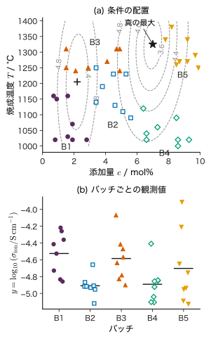
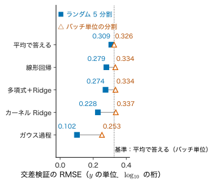
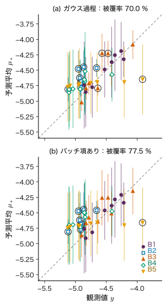
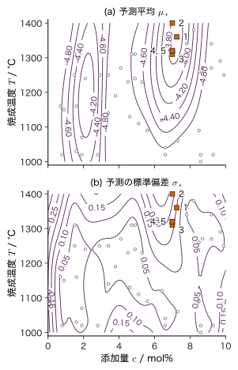
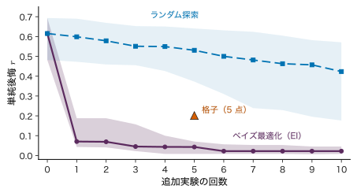
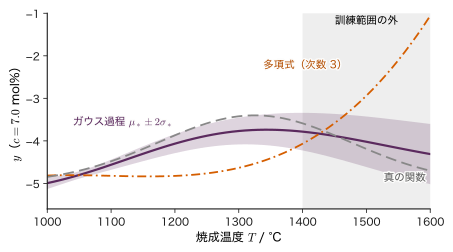

第28章材料探索の総合演習 — データ確認から追加実験の提案まで
- 手元にある 40 点の実験データから，次に試すべき 5 つの条件を，根拠とともに提案できるか．
- その提案と，それに添える「予測の誤差」「予測の幅」は，どこまで信用してよいか．
- 同じデータ・同じモデルでも，分け方や前処理の順番しだいで誤差が半分に見えることがある．何を確かめれば，自分をだまさずに済むか．
研究室に，ある酸化物固体電解質のデータが 40 点たまったとしよう．添加量と焼成温度を変えて焼いた試料のイオン伝導度である．先輩は「ガウス過程で当てはめたら誤差は 0.1 桁だった．予測が一番高い条件を次に焼けばよい」と言う．ところが試料は 5 回の合成（バッチ）に分けて作られていて，バッチごとに試した条件が偏っている．誤差 0.1 桁という数字は，新しいバッチで焼く次の試料にも当てはまるのだろうか．
本章は，これまでの章で学んだ道具を一続きの作業としてつなぐ総合演習である．教育用の合成データを 1 組決め，データの確認（単位・欠測・重複・外れ値・バッチの偏り），分割の設計（漏洩の点検），基準モデル，モデルの比較（多項式＋Ridge，カーネル Ridge，ガウス過程），評価と不確かさ（予測区間の被覆率），ベイズ最適化による追加 5 点の提案，失敗例，再現できる報告の順に進める．本文の数値・表は，すべて公開した台本（Python，numpy と scipy だけで動く）を実行して得たもの（図はその出力から描いたもの）であり，読者は同じ数値を自分の計算機で再現できる．
- 表形式の材料データを，単位・範囲・欠測・重複・外れ値・バッチの偏りの順に点検し，直した内容を記録できる．
- データの集め方（バッチ）に合わせて分割を設計し，ランダムな分割がどれだけ楽観的な誤差を出すかを数値で示せる．
- 平均で答えるモデルと線形回帰を基準に置き，それより良いかどうかでモデルを判断できる．
- 入れ子の交差検証で，ハイパーパラメーターの選択と性能の評価を分けられる．
- ガウス過程の 95 % 予測区間の被覆率を調べ，バッチのずれを共分散に入れる式を導いて使える．
- 期待改善量（EI）で追加の実験条件を逐次に選び，その理由を数で説明できる．方法の良し悪しを多数の seed の中央値と四分位範囲で比べられる．
- 前処理の漏洩・分割の誤り・外挿・ノイズの過小評価が，それぞれ何を引き起こすかを数値で示し，直し方を言える．
- 他人が再現できる形（seed，版，分割，ハイパーパラメーター）で結果を報告できる．
入門ルートで読む節：この章は詳しいルートの章である．入門ルートでは 28.11（まとめ）だけを読めばよい．
28.1 材料探索の問題設定とデータの確認詳しいルート
28.1.1 作業の全体像
本章の作業は 図28.1 の 7 段階からなる．大切なのは順番である．たとえば分割（段階 2）より前に標準化や外れ値の除去を全データで行うと，評価に使うはずのデータの情報が学習に流れ込む（第6章 6.7）．また，追加実験の提案（段階 6）は，評価（段階 5）で予測の幅が信用できるかを確かめてからでないと，根拠にならない．
28.1.2 データと記号
題材は，架空の酸化物固体電解質である．固体電解質の多くは，価数の違うイオンを添加して空孔などの欠陥を作り，イオンを動きやすくしている．添加量が少なすぎると動く欠陥が足りず，多すぎると欠陥どうしが結びついて動きにくくなるので，伝導度は添加量に対して極大を持ちうる．また焼成温度は，緻密化（気孔が減ること）や粒の成長，揮発しやすい成分の損失を通して伝導度を変えるので，最適な温度があり，それは組成によって変わりうる．第12・13章のデータ C（添加量だけの 1 次元）を，この温度依存性を加えて 2 次元にしたのが本章のデータである．
記号を決める．第12・13章のデータ C では添加量を $x$ と書いたが，本章では入力ベクトル $\bm{x}$ と区別するため，添加量を $c$（mol%）と書く．
- 添加量 $c\in[0,10]$ mol%，焼成温度 $T\in[1000,1400]$ °C．入力ベクトルは $\bm{x}=(c,T)^{\tp}\in\R^{2}$（$D=2$）．
- 目標値 $y=\log_{10}(\sigma_{\mathrm{ion}}/\mathrm{S\,cm^{-1}})$（無次元．伝導度 $\sigma_{\mathrm{ion}}$ を S cm$^{-1}$ で測った値の常用対数）．$y$ の差 0.1 は伝導度の比 $10^{0.1}=1.26$ 倍に当たる．以下，$y$ の単位を「桁」と呼ぶことがある．
- データ $\data=\{(\bm{x}_n,y_n)\}_{n=1}^{N}$，$N=40$．試料 $n$ を合成したバッチの番号を $j(n)\in\{1,\dots,5\}$ と書く．
データは次の式で作った教育用の合成データであり，実在の物質のデータではない．真の関数（実際の研究では分からない関数）を
\begin{equation} \begin{aligned} g(c,T)&=-5.0+A(c)\,\psi(c,T),\\ A(c)&=1.0\,e^{-(c-2.2)^{2}/(2\cdot0.7^{2})}\\ &\quad+1.6\,e^{-(c-7.0)^{2}/(2\cdot1.1^{2})},\\ \psi(c,T)&=e^{-(T-T_{\mathrm{opt}}(c))^{2}/(2\cdot150^{2})},\\ T_{\mathrm{opt}}(c)&=1150+25c \end{aligned} \label{eq:28-true} \end{equation}とする（$T$ と $T_{\mathrm{opt}}$ は °C，$c$ は mol%）．$A(c)$ はデータ C の添加量依存性そのもの，$\psi(c,T)$ は最適温度 $T_{\mathrm{opt}}(c)$ のまわりの幅 150 °C の山（$0\lt\psi\le1$）で，最適温度は添加量 1 mol% あたり 25 °C 上がる．山の頂上 $T=T_{\mathrm{opt}}(c)$ では $\psi=1$ になるので，大域的な最大は $g=-5.0+1.6=-3.400$（$c=7.0$ mol%，$T=1325$ °C），局所的な極大は $g=-4.000$（$c=2.2$ mol%，$T=1205$ °C）である（2 つの山の裾の重なりによる 0.0001 程度のずれを除く）．観測値は
\begin{equation} \begin{aligned} y_n&=g(\bm{x}_n)+u_{j(n)}+\varepsilon_n,\\ u_j&\sim\Normal(0,\,0.08^{2}),\\ \varepsilon_n&\sim\Normal(0,\,0.05^{2}) \end{aligned} \label{eq:28-obs} \end{equation}とした．$u_j$ はバッチ $j$ に共通のずれ（原料のロット，炉の温度の校正，雰囲気の違いなど，記録された入力では表せない要因をまとめたもの），$\varepsilon_n$ は試料ごとの測定のノイズで，すべて互いに独立とする．バッチは 5 つ，1 バッチ 8 点で，バッチごとに試した条件の範囲が偏っている（図28.2(a)）．$c$ は 0.1 mol%，$T$ は 10 °C 単位に丸めた．乱数は numpy.random.default_rng(20261112) で，引く順番まで生成の台本に書いてある．
データと台本は次の 3 つのファイルとして公開している．
- ch28_capstone_data.csv：データ（列は
sample_id, batch, c_molpct, T_C, y_log10_sigma）． - ch28_make_data.py：上の式でデータを作る台本．
- ch28_capstone.py：本章の計算をすべて行う台本（numpy と scipy だけを使う．本文の数値は Python 3.12.13，numpy 2.5.4，scipy 1.18.1 で得た）．
動かし方：3 つのファイルを同じフォルダーに置き（ch28_capstone.py は同じフォルダーの ch28_make_data.py から真の関数とデータの作り方を読み込む），そのフォルダーで python ch28_capstone.py を実行する．28.1〜28.7 節の数値が順に表示される（多数の seed の比較を含めて約 2 分）．--quick を付けると繰り返しの回数を 20 回に減らして試せ，--json 名前.json を付けると結果を JSON にも保存する．python ch28_make_data.py は CSV を作り直す（同じ seed なので同じ内容になる）．図は，この台本の出力を matplotlib で描いたものである（描画の部分は台本に含めていない）．
CSV には，点検の練習のために不備を 3 つわざと入れてある（生成の台本の冒頭に書いてある）．以下では，それを知らないつもりで点検する．
28.1.3 点検の順番
手順：表形式のデータを点検する
- 単位と意味：各列が何の量で，どの単位か（°C か K か，mol% か wt% か，$\sigma$ か $\log_{10}\sigma$ か）．
- 範囲：実験の計画した範囲・物理的にありうる範囲に収まるか．
- 欠測：空欄はないか．空欄の理由（測定の失敗，未測定）は何か．
- 重複：同じ試料が 2 回入っていないか．同じ条件の繰り返し測定（これは重複ではなく大事な情報）と区別する．
- 外れ値：他と比べて極端な値はないか．極端なだけで除いてはいけない．除くのは，記録の誤りなど理由が分かったときだけにする．
- グループの構造：バッチ・試料・測定日などのまとまりと，まとまりごとの条件の偏り．
直した内容は，元のファイルを上書きせずに記録として残す．
台本の関数 inspect_and_clean がこの順に点検した結果を 表28.1 に示す．
| 点検 | 見つかったこと | 処置 |
|---|---|---|
| 重複 | B2-05 の行が最後にもう一度ある（内容も同じ） | 2 行目を除く |
| 欠測 | B3-09 の $y$ が空欄（バッチ 3 だけ 9 試料目がある） | 除く（バッチ 3 は 8 点になる） |
| 範囲 | B3-02 の $T=1583$（計画は 1000〜1400 °C） | K で記録したと判断し $1583-273=1310$ °C に直す |
| 外れ値の目安 | $y$ の中央値 $-4.838$，MAD $0.185$，頑健な $z$ の絶対値の最大は 3.37（B5-08，$y=-3.912$） | 記録の誤りの根拠がないので残す |
外れ値の目安には，平均と標準偏差ではなく中央値と MAD（median absolute deviation．中央値からの絶対偏差の中央値）を使った．頑健な $z$ は $(y_n-\mathrm{中央値})/(1.4826\times\mathrm{MAD})$ で，係数 1.4826 は Gauss 分布なら MAD を標準偏差に換算する数である．平均と標準偏差は外れ値そのものに引っ張られるので，外れ値を探す道具としては鈍い．B5-08 は頑健な $z$ が 3.37 と大きいが，これは伝導度の高い条件を測ったからかもしれず，まさに探している「良い試料」の候補である．ここで除けば，探索の手がかりを自分で捨てることになる．
点検後の 40 点のバッチごとの要約を 表28.2，散布図を 図28.2 に示す．
| バッチ | $c$ / mol% | $T$ / °C | $y$ の平均 | $y$ の最大 |
|---|---|---|---|---|
| B1 | 0.7〜2.8 | 1020〜1160 | $-4.525$ | $-4.218$ |
| B2 | 3.4〜5.6 | 1090〜1250 | $-4.909$ | $-4.658$ |
| B3 | 1.5〜4.9 | 1240〜1310 | $-4.585$ | $-4.070$ |
| B4 | 6.4〜9.3 | 1000〜1120 | $-4.891$ | $-4.408$ |
| B5 | 7.8〜9.9 | 1250〜1380 | $-4.702$ | $-3.912$ |

図28.2 から次のことが分かる．第一に，バッチと条件が強く結びついている．B4 は低温・高添加，B5 は高温・高添加というように，各バッチは条件の空間の一部しか測っていない．このため，ある条件の $y$ が高いのが「条件のおかげ」か「そのバッチのずれ $u_j$ のおかげ」かを，データだけから切り分けるのは難しい（交絡．第6章 6.11）．第二に，真の最大の近く（$c\approx7$ mol%，$T\approx1300$ °C）には点が 1 つもない．最良の観測値 $-3.912$ は B5-08（$c=7.8$ mol%，$T=1340$ °C）で，その条件の真の値は $g=-3.772$ である（真の最大との差 0.372．この B5 はずれ $u_5$ が負のバッチだった）．
例題28.1 単位の点検と伝導度への換算
(1) B3-02 の $T=1583$ を K で記録したものとみなすと，°C では何度か．0 °C を 273 K としてよいとき（表28.1 の処置）と，273.15 K とするときの両方を答え，台本が 273 を引いた理由を述べよ．(2) 最良の観測値 $y=-3.912$ と真の最大 $y=-3.400$ を伝導度 $\sigma_{\mathrm{ion}}$（S cm$^{-1}$）に直し，比を求めよ．(3) 重複した行を除かずに 41 行を 5 分割すると，B2-05 の 2 つの行が別々の組に入る確率はおよそいくらか．別々に入ると何が起こるか．
解答 (1) $1583-273=1310$ °C，$1583-273.15=1309.85$ °C．このデータの温度は 10 °C 単位に丸めて記録されている（他の 39 点はすべて 10 の倍数）ので，K で書いたときも整数に丸めたと考えると，273 を引いて 1310 °C とするのが記録の形と合う．どちらにしても 1 °C 未満の違いで，解析への影響は無視できる．
(2) $\sigma_{\mathrm{ion}}=10^{y}\ \mathrm{S\,cm^{-1}}$ なので，$10^{-3.912}=1.22\times10^{-4}\ \mathrm{S\,cm^{-1}}$，$10^{-3.400}=3.98\times10^{-4}\ \mathrm{S\,cm^{-1}}$．比は $10^{-3.400-(-3.912)}=10^{0.512}=3.25$ 倍である．対数の差 0.5 は伝導度で約 3 倍に当たる．
(3) 一方の行がある組に入ったとき，もう一方の行は残り 40 行のどれかの位置に入る．同じ組の残りの席はおよそ 8 なので，同じ組に入る確率は約 $8/40=0.2$，別々の組に入る確率は約 $0.8$ である．別々に入ると，検証する行とまったく同じ行が訓練データにあることになり，その行の予測は「覚えている値を答える」だけで当たる．検証誤差は小さく見えるが，新しい試料の予測力とは関係がない（第6章 6.7）．
28.2 分割の設計 — バッチをまたがせない詳しいルート
28.2.1 何を予測したいのかを先に決める
分割の単位は，モデルを使う場面で「何が新しいか」で決まる（第6章 6.8）．本章の目的は，次のバッチで焼く試料の伝導度を予測し，次に試す条件を決めることである．次のバッチのずれ $u_j$ はまだ誰も見ていない．したがって評価も「訓練に使ったバッチとは別のバッチ」で行うのが正直である．
本章では二つの分け方を並べて使う．
- ランダム 5 分割：40 点を乱数で並べ替え，8 点ずつの 5 組に分ける（seed 20261112）．各回で 32 点で学習し，8 点で検証する．
- バッチ単位の分割（leave-one-batch-out．第6章 6.8 の定義6.7 の leave-one-group-out で，グループをバッチにしたもの）：バッチを 1 つずつ丸ごと検証に回す 5 分割．各回で 4 バッチ 32 点で学習し，残りの 1 バッチ 8 点で検証する．
どちらも 32 点で学習して 8 点で検証する点は同じである．違うのは，検証する点の同じバッチの仲間が訓練データにいるかどうかだけである．ランダム 5 分割では，検証する 8 点のそれぞれについて，同じバッチの仲間が平均して約 6 点訓練データにいる．
28.2.2 バッチのずれが誤差の下限を決める
どんなに良いモデルでも，まだ見ていないバッチのずれ $u_j$ は予測できない．真の関数 $g$ を完全に知っているモデルでも，新しいバッチの観測値に対する誤差は $y-g=u_j+\varepsilon$ で，その分散は $0.08^{2}+0.05^{2}$ である．よって，新しいバッチでの RMSE の下限は
$$ \sqrt{0.08^{2}+0.05^{2}}=\sqrt{0.0089}=0.094 $$である．一方，同じバッチの仲間が訓練データにいれば，モデルはその仲間の値を通してずれ $u_j$ をある程度「覚える」ことができ，誤差はこの下限より小さくなりうる（例題28.2）．ランダム分割の誤差がこの 0.094 を下回ったら，それは新しいバッチの予測力ではありえない，という目安になる．
例題28.2 仲間がいるときの誤差の下限
真の関数 $g$ を知っていて，さらに検証する点と同じバッチの観測が訓練データに $n$ 点あるモデルを考える．このモデルはバッチのずれを $\hat{u}=\frac1n\sum_{i=1}^{n}(y_i-g(\bm{x}_i))$ と見積もり，$\hat{y}=g(\bm{x})+\hat{u}$ と予測する．(1) 検証点の二乗誤差の期待値を求めよ．(2) $n=6$ と $n=7$ のときの RMSE を求め，新しいバッチの下限 0.094 と比べよ．
解答 (1) 訓練の $n$ 点は $y_i-g(\bm{x}_i)=u+\varepsilon_i$ なので $\hat{u}=u+\bar{\varepsilon}$（$\bar{\varepsilon}=\frac1n\sum_i\varepsilon_i$）．検証点は $y=g(\bm{x})+u+\varepsilon$ だから
$$ \begin{aligned} y-\hat{y}&=(g+u+\varepsilon)-(g+u+\bar{\varepsilon})\\ &=\varepsilon-\bar{\varepsilon}. \end{aligned} $$$u$ は打ち消し合って消える．$\varepsilon$ と $\bar{\varepsilon}$ は独立で，$\Var[\bar{\varepsilon}]=\sigma^{2}/n$（第2章 2.8）なので，二乗誤差の期待値は $\sigma^{2}+\sigma^{2}/n=\sigma^{2}(1+1/n)$ である（$\sigma=0.05$）．
(2) $n=6$：$0.05\sqrt{1+1/6}=0.054$．$n=7$：$0.05\sqrt{1+1/7}=0.053$．新しいバッチの下限 0.094 の約 0.57 倍である．同じバッチの仲間がいるかどうかだけで，誤差の下限がほぼ半分になる．
28.2.3 漏洩の点検表
分割の前後に確かめることを 表28.3 にまとめる．第6章の 6.7〜6.8 節の内容を，この題材に当てはめたものである．
| 問い | 本章での答えと処置 |
|---|---|
| 同じ試料・重複が訓練と検証にまたがっていないか | 重複行を除いた（表28.1）．1 試料 1 行 |
| 同じバッチが訓練と検証にまたがっていないか | 正直な評価はバッチ単位の分割．ランダム分割は比較のためだけに使う |
| 前処理（標準化・補完・外れ値の除去）の量を訓練データだけで決めたか | 標準化の平均・標準偏差は各回の訓練データだけで計算する（28.4 節）．補完はせず，欠測行は除いた |
| ハイパーパラメーターを検証データを見て選んでいないか | 入れ子の交差検証：内側（訓練データの中だけ）で選び，外側で評価する |
| 入力に，予測する時点で手に入らない量が入っていないか | 入力は計画時に決まる $c$ と $T$ だけ．焼結後の密度などは入れない |
| テストに使うデータを何度も見ていないか | 本章では最終的な判断は追加実験の結果で行う（28.6 節）．評価の数値は交差検証のもの |
28.3 基準モデル — これより良くなければ意味がない詳しいルート
28.3.1 二つの基準
モデルを作り込む前に，最も単純な答え方の誤差を測っておく．これが「これより良くなければ，モデルを使う意味がない」という基準線になる．
- 平均で答えるモデル：入力を見ずに，訓練データの $y$ の平均 $\bar{y}_{\mathrm{tr}}$ をいつも答える．決定係数 $R^{2}$ はこのモデルを 0 とする目盛りである（第6章 6.10）．
- 線形回帰：$f(\bm{x};\bm{w})=w_0+w_1\tilde{c}+w_2\tilde{T}$ を最小二乗法で当てはめる（$\tilde{c},\tilde{T}$ は 28.4 節で定義する標準化した入力）．
評価には MAE と RMSE（第6章 6.10 節の定義．$\mathrm{MAE}=\frac1N\sum_n\abs{y_n-\hat{y}_n}$，$\mathrm{RMSE}=\sqrt{\frac1N\sum_n(y_n-\hat{y}_n)^{2}}$）を使う．交差検証では，5 回の検証の予測値 $\hat{y}_n$ を 40 点ぶん集めてから，40 点全体で MAE と RMSE を計算する．単位は $y$ と同じ「桁」である．
基準モデルの結果（表28.4 の上の 2 行）は，バッチ単位の分割で平均が RMSE 0.326，線形回帰が 0.334 である．線形回帰は平均より悪い．$y$ は $c$ にも $T$ にも山形に依存しているので，平面では表せず，しかも新しいバッチの条件の範囲は訓練データの範囲から外れがち（図28.2(a)）なので，平面を外へ延ばした予測が外れるからである．一方，ランダム 5 分割では線形回帰（0.279）の方が平均（0.309）より良い．分割の仕方で基準モデルどうしの順位まで入れ替わる．
例題28.3 平均で答えるモデルの誤差を手で計算する
バッチ単位の分割で B5 を検証に回すと，訓練データ（B1〜B4 の 32 点）の $y$ の平均は $-4.727$ である．B5 の 4 試料 B5-01，B5-02，B5-08，B5-04 の観測値 $y=(-4.647,\ -4.935,\ -3.912,\ -4.209)$ に対して，平均 $-4.73$（小数第 2 位に丸めた値）で答えたときの MAE と RMSE を求めよ．
解答 誤差 $y-\hat{y}$ は
$$ \begin{aligned} &-4.647+4.73=0.083,\\ &-4.935+4.73=-0.205,\\ &-3.912+4.73=0.818,\\ &-4.209+4.73=0.521. \end{aligned} $$MAE は $(0.083+0.205+0.818+0.521)/4$ $=1.627/4=0.407$．二乗和は $0.00689+0.04203$ $+0.66912+0.27144=0.98948$ なので，RMSE は $\sqrt{0.98948/4}$ $=\sqrt{0.24737}=0.497$．B5 の高い値（$-3.912$）を平均では説明できず，RMSE は MAE よりかなり大きい（大きな誤差を二乗で強く数えるため）．
28.4 モデルを育てる — 多項式・カーネル Ridge・ガウス過程詳しいルート
28.4.1 標準化は訓練データだけで
$c$（0〜10 mol%）と $T$（1000〜1400 °C）は桁の違う量なので，そのまま距離や多項式に入れると $T$ だけが効いてしまう．そこで各回の訓練データだけから平均と標準偏差を求め，
\begin{equation} \tilde{c}=\frac{c-\bar{c}_{\mathrm{tr}}}{s_{c,\mathrm{tr}}},\qquad \tilde{T}=\frac{T-\bar{T}_{\mathrm{tr}}}{s_{T,\mathrm{tr}}} \label{eq:28-std} \end{equation}と標準化する（$s$ は $N$ で割る標準偏差）．検証データには，訓練データで求めたこの 4 つの数を当てはめるだけにする．標準化した入力を $\tilde{\bm{x}}=(\tilde{c},\tilde{T})^{\tp}$ と書く．40 点全部では $\bar{c}=5.19$ mol%，$s_c=2.91$ mol%，$\bar{T}=1173.75$ °C，$s_T=111.8$ °C である．
例題28.4 訓練データの量で標準化する
訓練データの温度が $(1020,\ 1150,\ 1250,\ 1310)$ °C の 4 点，検証データが $1380$ °C の 1 点だとする．(1) 訓練データの平均と標準偏差（$N$ で割る）を求め，検証点の $\tilde{T}$ を計算せよ．(2) 誤って 5 点全部で平均と標準偏差を求めると，検証点の $\tilde{T}$ はいくらになるか．何が漏れているか．
解答 (1) 平均は $(1020+1150+1250+1310)/4$ $=4730/4=1182.5$ °C．偏差は $(-162.5,\ -32.5,\ 67.5,\ 127.5)$，二乗は $(26406.25,\ 1056.25,$ $4556.25,\ 16256.25)$ で，和は $48275$．分散は $48275/4=12068.75$，標準偏差は $\sqrt{12068.75}=109.86$ °C．検証点は $\tilde{T}=(1380-1182.5)/109.86=1.798$．
(2) 5 点の平均は $(4730+1380)/5=1222.0$ °C，偏差の二乗の和は $(-202)^{2}+(-72)^{2}+28^{2}$ $+88^{2}+158^{2}=79480$ で，標準偏差は $\sqrt{79480/5}=126.08$ °C．検証点は $\tilde{T}=(1380-1222)/126.08=1.253$．検証点の値 1380 °C が平均と標準偏差を通して訓練側の目盛りに入り込み，「検証点は訓練範囲から 1.8 標準偏差離れている」という外挿の度合いが「1.25 標準偏差」に縮んで見える．
28.4.2 三つのモデル
(1) 多項式＋Ridge．次数 $d$ 以下の $\tilde{c}^{a}\tilde{T}^{b}$（$a+b\le d$）をすべて基底関数にする．基底の数は $M=(d+1)(d+2)/2$ で，$d=2$ なら $M=6$（$1,\tilde{c},\tilde{T},\tilde{c}^{2},\tilde{c}\tilde{T},\tilde{T}^{2}$）．計画行列を $\bm{\Phi}\in\R^{N\times M}$ とし，第8章 8.6 の Ridge 回帰の損失から切片 $w_0$ だけを罰則の外に出した
\begin{equation} \begin{aligned} L(\bm{w})&=\frac12\norm{\bm{y}-\bm{\Phi}\bm{w}}^{2}\\ &\quad+\frac{\lambda}{2}\sum_{j=1}^{M-1}w_j^{2} \end{aligned} \label{eq:28-ridge} \end{equation}を最小にする（$\bm{w}\in\R^{M}$，$w_0$ が切片）．勾配を 0 とおくと $(\bm{\Phi}^{\tp}\bm{\Phi}+\lambda\bm{P})\bm{w}$ $=\bm{\Phi}^{\tp}\bm{y}$（$\bm{P}=\diag(0,1,\dots,1)\in\R^{M\times M}$）で，これを連立方程式として解く．ハイパーパラメーターは $d\in\{1,2,3,4\}$ と $\lambda\in\{10^{-3},10^{-2},10^{-1},1,10,100\}$．
(2) カーネル Ridge 回帰（第10章 10.6）．RBF カーネル $k(\tilde{\bm{x}},\tilde{\bm{x}}')$ $=\exp\bigl(-\norm{\tilde{\bm{x}}-\tilde{\bm{x}}'}^{2}/(2\ell^{2})\bigr)$（$\sigma_f=1$）で，訓練データの平均 $\bar{y}_{\mathrm{tr}}$ を引いた値に当てはめる：
\begin{equation} \begin{aligned} \bm{a}&=(\bm{K}+\lambda\bm{I})^{-1}\\ &\quad\times(\bm{y}-\bar{y}_{\mathrm{tr}}\bm{1}),\\ f(\tilde{\bm{x}}_*)&=\bar{y}_{\mathrm{tr}}+\bm{k}_*^{\tp}\bm{a} \end{aligned} \label{eq:28-krr} \end{equation}（$\bm{K}\in\R^{N\times N}$，$\bm{k}_*\in\R^{N}$，$\bm{1}\in\R^{N}$．逆行列は作らず Cholesky 分解で解く）．ハイパーパラメーターは $\ell\in\{0.3,0.5,1,2\}$（標準化した単位）と $\lambda\in\{10^{-3},\dots,10\}$．
(3) ガウス過程回帰（第12章）．平均関数を定数 $m=\bar{y}_{\mathrm{tr}}$ とし，入力の成分ごとに長さスケールを持つ RBF カーネル（ARD カーネル．automatic relevance determination）
\begin{equation} \begin{aligned} &k(\tilde{\bm{x}},\tilde{\bm{x}}')\\ &=\sigma_f^{2}\exp\!\Bigl[-\frac{(\tilde{c}-\tilde{c}')^{2}}{2\ell_c^{2}}\\ &\qquad\qquad\ \ -\frac{(\tilde{T}-\tilde{T}')^{2}}{2\ell_T^{2}}\Bigr] \end{aligned} \label{eq:28-ard} \end{equation}を使う．$\ell_c=\ell_T$ なら第12章の RBF カーネルに戻る．添加量と温度とで「どれだけ離れると相関が消えるか」が違ってよい，という仮定である．$\bm{K}_y=\bm{K}+\sigma^{2}\bm{I}$ として，予測は第12章 12.4 の式
\begin{equation} \begin{aligned} \mu_*&=m+\bm{k}_*^{\tp}\bm{K}_y^{-1}(\bm{y}-m\bm{1}),\\ \sigma_*^{2}&=k(\tilde{\bm{x}}_*,\tilde{\bm{x}}_*)-\bm{k}_*^{\tp}\bm{K}_y^{-1}\bm{k}_* \end{aligned} \label{eq:28-gp} \end{equation}である．$\sigma_*^{2}$ は潜在関数（真の関数）の予測分散で，次の 1 回の観測値の予測分散は $\sigma_*^{2}+\sigma^{2}$ である．ハイパーパラメーター $\bm{\theta}=(\ell_c,\ell_T,\sigma_f,\sigma)$ は，訓練データでの対数周辺尤度（第12章 12.7）を最大にして決める（L-BFGS-B 法で対数の目盛りの上を探し，出発点を 4 つ変えて最良のものをとる）．
40 点全部で当てはめると，$\ell_c=0.336$，$\ell_T=1.834$（標準化した単位．元の単位では $0.336\times2.91=0.98$ mol%，$1.834\times111.8=205$ °C），$\sigma_f=0.391$，$\sigma=0.056$ になった．長さスケールは添加量の山の幅（0.7〜1.1 mol%）と温度の山の幅（150 °C）に近い．$\sigma=0.056$ は測定のノイズ 0.05 に近く，バッチのずれ 0.08 を含めた $0.094$ よりずっと小さい．バッチのずれは独立なノイズとしては扱われず，関数 $f$ の側に吸収されている，ということである（28.5 節で問題になる）．
28.4.3 入れ子の交差検証で選び，外側で評価する
多項式の $(d,\lambda)$ とカーネル Ridge の $(\ell,\lambda)$ は，外側の 1 回ごとにその回の訓練データ（32 点）の中だけで交差検証して選ぶ（第6章 6.5 の入れ子の交差検証）．内側の分け方は外側に合わせ，外側がバッチ単位なら内側も残り 4 バッチの leave-one-batch-out，外側がランダムなら内側はランダム 4 分割とした．ガウス過程は周辺尤度でハイパーパラメーターを決めるので，内側の交差検証は使わない．
| モデル | ランダム MAE | ランダム RMSE | バッチ単位 MAE | バッチ単位 RMSE |
|---|---|---|---|---|
| 平均で答える | 0.255 | 0.309 | 0.272 | 0.326 |
| 線形回帰 | 0.219 | 0.279 | 0.245 | 0.334 |
| 多項式＋Ridge | 0.224 | 0.274 | 0.265 | 0.334 |
| カーネル Ridge | 0.163 | 0.228 | 0.281 | 0.337 |
| ガウス過程 | 0.076 | 0.102 | 0.203 | 0.253 |

読み取れることは三つある．
- 正直な評価（バッチ単位）で基準を超えたのはガウス過程だけである（0.253 < 0.326）．多項式＋Ridge（0.334）とカーネル Ridge（0.337）は，平均で答えるモデルにも負けている．
- ランダム分割は楽観的である．ガウス過程の RMSE はランダム分割で 0.102，バッチ単位で 0.253 と 2.5 倍違う．ランダム分割の 0.102 は，新しいバッチの下限 0.094（28.2 節）とほぼ同じで，「仲間のいるバッチ」の予測力を測っている．冒頭の「誤差は 0.1 桁」という先輩の数字は，これに当たる．
- 内側の選択も分割に引きずられる．内側をランダムに分けると，カーネル Ridge は 5 回とも $\ell=0.3$〜$0.5$，$\lambda=10^{-3}$〜$10^{-1}$ という細かく当てはめる設定を選び，多項式は 5 回中 4 回で次数 4 を選んだ．内側もバッチ単位にすると，多項式は 5 回とも次数 1（$\lambda=10$〜$100$），カーネル Ridge は $\lambda=1$〜$10$ と強い正則化を選んだ．バッチをまたぐと細かい凹凸は再現しないことを，内側の交差検証が見抜いたのである．
なぜガウス過程だけが基準を超えたのか
三つのモデルの違いは，表せる関数の形よりもハイパーパラメーターの決め方にある．多項式とカーネル Ridge は格子の上の少数の候補から，32 点の交差検証で選ぶ．32 点を 4 バッチに分けた内側の検証は 1 回あたり 8 点しかなく，選択が不安定である．ガウス過程は 4 つのハイパーパラメーター（成分ごとの長さスケールを含む）を連続的に，訓練データ全体の周辺尤度で決めるので，少ないデータでも比較的安定する．ただしこれはこのデータでの結果であり，ガウス過程が常に勝つという意味ではない（28.10 節）．
28.5 評価と不確かさ — 予測区間は何 % 当たるか詳しいルート
28.5.1 被覆率
ベイズ最適化は，予測平均だけでなく予測の幅 $\sigma_*$ を使って次の条件を決める．したがって「幅が正直か」を確かめておく必要がある．そのための量が被覆率である．
定義28.1 予測区間の被覆率
検証データ $\{(\bm{x}_n,y_n)\}_{n=1}^{N}$ のそれぞれについて，モデルが観測値 $y_n$ の予測平均 $\hat{y}_n$ と予測標準偏差 $s_n$ を出すとする．名目 95 % の予測区間 $[\hat{y}_n-1.96\,s_n,\ \hat{y}_n+1.96\,s_n]$ に観測値が入った点の割合，すなわち $\chi_n=1$（$\abs{y_n-\hat{y}_n}\le1.96\,s_n$ のとき），$\chi_n=0$（それ以外）として
\begin{equation} \mathrm{cov}=\frac1N\sum_{n=1}^{N}\chi_n \label{eq:28-coverage} \end{equation}を被覆率（coverage）という（$\mathrm{cov}$ は coverage の略で，共分散 $\Cov$ とは別の量）．予測分布が正しければ被覆率は 0.95 に近い．
ガウス過程では，観測値の予測標準偏差は $s_n=\sqrt{\sigma_*^{2}+\sigma^{2}}$ である（潜在関数の $\sigma_*$ だけを使うと，ノイズの分だけ区間が狭すぎる．第12章 12.6）．
本章のデータで調べると，ガウス過程の被覆率はランダム 5 分割で 0.95（40 点中 38 点）だが，バッチ単位の分割では 0.70（40 点中 28 点）しかない（図28.4(a)）．ランダム分割では名目どおりに見える区間が，新しいバッチに対しては 3 割も外れる．外れた 12 点のうち 8 点は B2 の全点（残りは B3 の 3 点と B5 の 1 点）で，B2 の 8 点の残差（観測値−予測平均）の平均は $-0.284$ である．B2 はバッチのずれ $u_2=-0.106$ が負で，しかも条件が B1 と B3 の間の谷（図28.2(a)）にあるため，両隣のバッチから外挿した予測が高すぎたのである．

28.5.2 バッチのずれを共分散に入れる
区間が狭すぎる理由は，モデルが式 \eqref{eq:28-obs} の $u_j$ を知らないことにある．ガウス過程は観測値の共分散を $\bm{K}+\sigma^{2}\bm{I}$ とし，「同じバッチの 2 点は共通のずれを持つ」という構造を表せない．そこで，バッチのずれを確率変数として共分散に入れる．
導出：バッチ項を入れた共分散と予測分散
観測を $y_n=f(\bm{x}_n)+u_{j(n)}+\varepsilon_n$ とし，$f\sim\GP(m,k)$，$u_j\sim\Normal(0,\sigma_b^{2})$（$j=1,\dots,J$），$\varepsilon_n\sim\Normal(0,\sigma^{2})$ がすべて互いに独立だとする．$\sigma_b$ はバッチのずれの標準偏差で，ハイパーパラメーターとして推定する．
2 つの観測の共分散を，共分散の双線形性で 9 項に分ける．$f$，$u$，$\varepsilon$ の間の共分散は独立性から 0 なので，残るのは同じ種類どうしの 3 項である：
$$ \begin{aligned} &\Cov[y_n,y_{n'}]\\ &=\Cov[f_n,f_{n'}]\\ &\quad+\Cov[u_{j(n)},u_{j(n')}]\\ &\quad+\Cov[\varepsilon_n,\varepsilon_{n'}]. \end{aligned} $$第 1 項は $k(\bm{x}_n,\bm{x}_{n'})$．第 2 項は，同じバッチ（$j(n)=j(n')$）なら同じ確率変数どうしなので $\Var[u_j]=\sigma_b^{2}$，違うバッチなら独立なので 0．第 3 項は $n=n'$ のときだけ $\sigma^{2}$．バッチの所属を表す行列 $\bm{Z}\in\{0,1\}^{N\times J}$（$Z_{nj}=1$ は試料 $n$ がバッチ $j$ のもの．第25章のヘッドの出力 $\bm{Z}_j$ や第27章の分配関数 $Z$ とは別の量で，この章だけの記号）を使うと，$(\bm{Z}\bm{Z}^{\tp})_{nn'}=\sum_jZ_{nj}Z_{n'j}$ は同じバッチなら 1，違えば 0 なので，行列でまとめて
\begin{equation} \bm{K}_y=\bm{K}+\sigma_b^{2}\bm{Z}\bm{Z}^{\tp}+\sigma^{2}\bm{I} \label{eq:28-batchcov} \end{equation}となる（$\bm{K}_y\in\R^{N\times N}$）．$(\bm{y},f_*)$ の同時分布で変わるのは $\bm{y}$ の共分散だけで，$f_*=f(\bm{x}_*)$ と $y_n$ の共分散は $\Cov[f_*,f_n]=k(\bm{x}_*,\bm{x}_n)$ のまま（$u$ と $\varepsilon$ は $f_*$ と独立）である．したがって潜在関数の予測は，式 \eqref{eq:28-gp} の $\bm{K}_y$ を式 \eqref{eq:28-batchcov} に替えるだけでよい（第12章 12.4 の導出がそのまま使える）．
新しいバッチ $J+1$ で測る観測値は $y_*=f_*+u_{J+1}+\varepsilon_*$ で，$u_{J+1}$ はまだ一度も観測されていないから，訓練データと独立である．独立な量の和の分散は分散の和なので
\begin{equation} \begin{aligned} &\Var[y_*\mid\data]\\ &=\sigma_*^{2}+\sigma_b^{2}+\sigma^{2} \end{aligned} \label{eq:28-predvar} \end{equation}となる．
（導出終わり）
40 点全部でバッチ項ありのモデルを当てはめると，$\sigma_b=0.097$，$\sigma=0.043$ と推定された（真の値はそれぞれ 0.08 と 0.05）．対数周辺尤度はバッチ項なしの 18.35 から 21.44 に上がり，データがバッチ項を支持していることが分かる．バッチ単位の分割での被覆率は 0.70 から 0.775（40 点中 31 点）に上がった．B3 と B5 の外れは消えたが，B2 の 8 点は依然としてすべて区間の外にある（図28.4(b)）．ただし RMSE は 0.253 から 0.275 に少し悪くなった．バッチのずれを $f$ に吸収させない分，予測平均がなめらかになったためである．
28.5.3 1 組のデータの被覆率は揺れる
40 点の被覆率 1 つは，それ自体がばらつく量である．そこで同じ作り方（式 \eqref{eq:28-true}，\eqref{eq:28-obs}，同じバッチの範囲）で seed だけを変えたデータを 100 組作り（seed $20261112+1000+r$，$r=0,\dots,99$．ランダム分割の 5 組への分け方も同じ seed で決める），同じ手順で被覆率を求めた（表28.5）．
| モデルと分割 | 本章のデータ | 100 組の平均 | 中央値 [第 1, 第 3 四分位] |
|---|---|---|---|
| ガウス過程・ランダム 5 分割 | 0.950 | 0.892 | 0.900 [0.869, 0.925] |
| ガウス過程・バッチ単位 | 0.700 | 0.846 | 0.850 [0.800, 0.925] |
| バッチ項あり・バッチ単位 | 0.775 | 0.880 | 0.900 [0.844, 0.925] |
100 組で見ても，バッチ単位の被覆率は名目の 0.95 に届かず，バッチ項を入れると平均で 0.846 から 0.880 に近づく．本章のデータ 1 組の 0.70 は，100 組の中でも低い方である．バッチ項を入れても 0.95 に届かない理由は二つある．一つは $\sigma_b$ を 4 バッチ（外側の 1 回の訓練データ）から推定していることで，4 個の $u_j$ から分散を決めるのは心許ない（実際，外側の 5 回で $\sigma_b$ の推定値は 0.018〜0.135 とばらついた）．もう一つは，ハイパーパラメーターを 1 つの値に決めて，その不確かさを区間に入れていないことである．
例題28.5 被覆率 0.70 は偶然か
(1) 予測分布が正しく，40 点が独立なら，95 % 区間から外れる点の数は二項分布 $\mathrm{Bin}(40,\,0.05)$ に従う．外れる数の期待値を求めよ．また，外れる数が 12 以上になる確率は $3.7\times10^{-7}$，5 以上になる確率は $0.048$ である．被覆率 0.70 は偶然と考えてよいか．(2) ある条件で $\sigma_*=0.15$ のとき，新しいバッチの観測値の予測標準偏差を，バッチ項なし（$\sigma=0.056$）とバッチ項あり（$\sigma_b=0.097$，$\sigma=0.043$）で求めよ．
解答 (1) 期待値は $40\times0.05=2$ 点．12 点外れる確率は $3.7\times10^{-7}$ で，偶然では説明できない．ただし同じバッチの 8 点は共通のずれ $u_j$ を持つので，40 点は独立ではない．1 つのバッチがまとめて外れることがあるので，実際の外れの数は二項分布よりばらつく（表28.5 の四分位範囲が広いのはこのため）．それを考えても 12 点は多く，区間が狭すぎると判断するのが妥当である．
(2) バッチ項なしとバッチ項ありで，それぞれ
$$ \begin{aligned} &\sqrt{0.15^{2}+0.056^{2}}\\ &\quad=\sqrt{0.02250+0.00314}=0.160,\\ &\sqrt{0.15^{2}+0.097^{2}+0.043^{2}}\\ &\quad=\sqrt{0.02250+0.00941+0.00185}\\ &\quad=\sqrt{0.03376}=0.184 . \end{aligned} $$新しいバッチの分だけ幅が 15 % 広がる．
28.6 候補の選択 — ベイズ最適化で追加 5 点を選ぶ詳しいルート
28.6.1 設定
次の 5 回の合成で試す条件を，第13章のベイズ最適化で 1 点ずつ選ぶ．設定は第13章に合わせる．
- 代理モデル：28.4 節のガウス過程（ARD カーネル，平均関数は観測値の平均，ハイパーパラメーターは各回に周辺尤度で選び直す）．追加のたびにその時点の全データで標準化をやり直す（全部が訓練データなので漏洩ではない）．
- 獲得関数：期待改善量（第13章 13.4，最大化，$\xi=0$）．$f_{\mathrm{best}}$ はそれまでの観測値の最大．$d=\mu_*-f_{\mathrm{best}}$，$z=d/\sigma_*$ として \begin{equation} \begin{aligned} &\mathrm{EI}(\bm{x})=d\,\Phi(z)\\ &\quad+\sigma_*\,\Normal(z\mid0,1) \end{aligned} \label{eq:28-ei} \end{equation} （$\sigma_*$ は潜在関数の予測標準偏差，$\Phi$ は標準 Gauss 分布の累積分布関数．$d$ は第13章と同じ「平均で見た改善量」で，28.4 節の多項式の次数 $d$ とは別の量）．
- 候補：$c$ を 0.25 mol% 刻み（41 通り），$T$ を 10 °C 刻み（41 通り）にした 1681 点の格子．その中で EI が最大の点を選ぶ．
- 観測：追加の 1 回ごとに新しいバッチで合成するとし，式 \eqref{eq:28-true}，\eqref{eq:28-obs} に従って新しいずれ $u$ と測定のノイズ $\varepsilon$ を乗せた値を「観測」する（乱数は seed 20261112）．新しい点には新しいバッチの番号を付ける．
- 推奨点と単純後悔（第13章 13.8）：観測値が最大の点を推奨点 $\hat{\bm{x}}$ とし，$r=g(\bm{x}^{\star})-g(\hat{\bm{x}})$（$g(\bm{x}^{\star})=-3.400$）を単純後悔とする．$r$ は真の関数を知っている合成データでだけ計算できる．
28.6.2 各回の候補と理由
| 回 | $c$ / mol% | $T$ / °C | $\mu_*$ | $\sigma_*$ | $f_{\mathrm{best}}$ | EI | 観測 $y$ | 真の $g$ |
|---|---|---|---|---|---|---|---|---|
| 1 | 7.25 | 1360 | $-3.721$ | 0.147 | $-3.912$ | 0.198 | $-3.426$ | $-3.469$ |
| 2 | 7.00 | 1400 | $-3.371$ | 0.104 | $-3.426$ | 0.074 | $-3.665$ | $-3.588$ |
| 3 | 7.00 | 1310 | $-3.532$ | 0.089 | $-3.426$ | 0.0050 | $-3.482$ | $-3.408$ |
| 4 | 7.00 | 1320 | $-3.487$ | 0.046 | $-3.426$ | 0.0019 | $-3.431$ | $-3.401$ |
| 5 | 7.00 | 1320 | $-3.463$ | 0.035 | $-3.426$ | 0.0025 | $-3.248$ | $-3.401$ |

各回の理由を，表の数で説明する．
- 1 回目（7.25 mol%，1360 °C）：予測平均が最大の点（$\mu_*=-3.721$）であり，しかも幅 $\sigma_*=0.147$ も小さくない．$d=\mu_*-f_{\mathrm{best}}=0.191$ と平均で既に最良値を上回るので，EI は 0.198 と大きい．B4 と B5 の間の，誰も測っていない領域である．標準偏差が最大の点（$c=0$，$T=1400$ °C，$\sigma_*=0.329$）は予測平均が $-4.917$ と低く，EI は $1\times10^{-4}$ しかない（例題28.6）．観測値は $-3.426$ で，最良値を一気に 0.49 更新した．
- 2 回目（7.00 mol%，1400 °C）：1 回目の結果を受けて，代理モデルは「高温側でさらに高い」と予測した（$\mu_*=-3.371$）．範囲の端であり，外挿に近い予測である．観測値は $-3.665$ で外れた（真の値 $-3.588$．温度の山の頂上 1325 °C を越えていた）．
- 3〜5 回目：2 回目の結果で山の頂上が 1300 °C 台にあることが分かり，$c=7.0$ mol% の 1310〜1320 °C を測った．EI は 0.002〜0.005 とどこでも小さく，改善の見込みはもう大きくないことを示している．4 回目と 5 回目は同じ条件を選んだ．ノイズがあるので，同じ点を繰り返し測ることにも意味がある（第13章 13.7）．
5 回の後の推奨点は，観測値が最大の 5 回目（7.00 mol%，1320 °C，$y=-3.248$）である．その真の値は $-3.401$ で，単純後悔は 0.0009，出発時の 0.372 から大きく下がった．ただし観測値 $-3.248$ そのものは真の値より 0.153 高い．観測値の最大を選ぶと，運良く高く出た値が選ばれやすいからである（28.9 節，例題28.9）．
例題28.6 1 回目の EI を手で計算する
1 回目の時点で $f_{\mathrm{best}}=-3.912$ である．候補 A（7.25 mol%，1360 °C）は $\mu_*=-3.7209$，$\sigma_*=0.1467$，候補 B（0 mol%，1400 °C）は $\mu_*=-4.9170$，$\sigma_*=0.3290$ である．式 \eqref{eq:28-ei} で両者の EI を求めよ．$\Phi(1.302)=0.9036$，$\Normal(1.302\mid0,1)=0.1709$，$\Phi(-3.054)=0.00113$，$\Normal(-3.054\mid0,1)=0.00376$ を使ってよい．
解答 候補 A：$d=-3.7209-(-3.912)=0.1911$，$z=0.1911/0.1467=1.302$．
$$ \begin{aligned} \mathrm{EI}_{\mathrm A}&=0.1911\times0.9036+0.1467\times0.1709\\ &=0.1727+0.0251=0.198. \end{aligned} $$候補 B：$d=-4.9170+3.912=-1.005$，$z=-1.005/0.3290=-3.054$．
$$ \begin{aligned} \mathrm{EI}_{\mathrm B}&=-1.005\times0.00113\\ &\quad+0.3290\times0.00376\\ &=-0.00114+0.00124\\ &=0.00010. \end{aligned} $$B は幅が A の 2 倍以上あるが，平均が最良値より 1 桁も低いので，「幅の分だけ運良く上回る」見込みがほとんどない．EI は A が B の約 2000 倍で，A が選ばれる．
28.6.3 ランダム探索・格子探索と多数の seed で比べる
1 回の実行がうまくいったことは，方法が良いことの証明にはならない（第13章 13.8）．そこで次の比較を 200 回繰り返した．
- 繰り返し $r$（$r=0,\dots,199$）ごとに，28.1 節と同じ作り方で 40 点のデータを作り直す（seed $20261112+1000+r$）．出発点のデータもバッチのずれも毎回違う．
- 同じ 40 点から，ベイズ最適化（上の設定），ランダム探索（$c$ と $T$ を一様乱数で選ぶ），格子（あらかじめ決めた 5 点：$(c,T)=(2.5,1100)$，$(2.5,1300)$，$(7.5,1100)$，$(7.5,1300)$，$(5.0,1200)$）で追加実験をする．観測の乱数はそれぞれ seed $20261112+r$，$20261112+100000+r$，$20261112+200000+r$．
- ベイズ最適化とランダム探索は 10 回まで続け，各回の単純後悔を記録する．

| 方法 | 出発時（40 点） | 追加 5 回 | 追加 10 回 |
|---|---|---|---|
| ベイズ最適化（EI） | 0.615 [0.482, 0.694] | 0.043 [0.008, 0.070] | 0.022 [0.008, 0.045] |
| ランダム探索 | 0.531 [0.373, 0.641] | 0.423 [0.176, 0.571] | |
| 格子（5 点） | 0.201 [0.201, 0.201] | — |
このデータでは，ベイズ最適化の差は大きい．追加 5 回の単純後悔の中央値は 0.043 で，ランダム探索（0.531）の約 12 分の 1，格子（0.201）の約 5 分の 1 である．同じ繰り返しどうしで比べると，ベイズ最適化の方が小さかったのはランダム探索に対して 200 回中 194 回（97.0 %），格子に対して 199 回（99.5 %）である．逆に言えば，3 % の繰り返しではランダム探索に負けている．この 97 % を，ベイズ最適化一般の勝率と読んではいけない．第13章のデータ C（1 次元，初期点 3 個，予算 20 回，13.8）では，代理モデルが合っていても勝ったのは約 8 割で，約 2 割の繰り返しで負けた．勝つ割合は次元・予算・出発点のデータで変わる．本章の設定は，2 次元の範囲を 5 回しか試せないランダム探索に特に不利で（次の段落），ベイズ最適化の側は出発点の 40 点から代理モデルのハイパーパラメーターを周辺尤度で決められる（第13章の比較は初期点 3 個で長さスケールを固定した）．
格子の結果は四分位範囲の幅が 0 である．格子の 5 点のうち $(7.5,1300)$ の真の値は $g=-3.601$ で，200 回中 198 回でこの点の観測値が 45 点中の最大になったため，後悔は $-3.400-(-3.601)=0.201$ になった（残りの 2 回はノイズのため別の点が最大になり，後悔は 0.40 と 0.48）．格子は配置を決めた時点で結果がほぼ決まる．真の最大の近くに格子点があるかどうかという「配置の運」に依存する方法である．
ランダム探索がほとんど進まないのは，2 次元の範囲（10 mol% × 400 °C）の中で，真の最大の近くに当たる確率が小さいからである．たとえば $\abs{c-7.0}\le0.5$ mol% かつ $\abs{T-1325}\le50$ °C の範囲（面積の比 $1/10\times100/400=0.025$）に 5 回のうち 1 回でも入る確率は $1-0.975^{5}=0.12$ しかない．1 次元のデータ C（第13章）より次元が 1 つ増えただけで，当てずっぽうはずっと難しくなる．
28.7 失敗例と改善詳しいルート
ここまでの手順の要所を一つずつ壊して，何が起こるかを数値で見る．結果を 表28.8 にまとめる．
| 失敗 | 数値（正しい手順 → 失敗した手順）と起こること |
|---|---|
| (a) 入力の標準化を全データで | バッチ単位の RMSE：多項式 0.334 → 0.333，カーネル Ridge 0.337 → 0.338，GP 0.253 → 0.253．このデータではほとんど変わらない |
| (b) バッチをまたいでランダム分割 | GP の RMSE 0.253 → 0.102，被覆率 0.70 → 0.95．誤差が 2.5 倍小さく，区間が正しく見える |
| (c) 訓練範囲の外（$T>1400$ °C） | 1600 °C で真の値 $-4.70$ に対し，多項式 $-1.06$，GP $-4.31$（$\sigma_*=0.35$）．多項式は 3.6 桁高い伝導度を予測する |
| (d) ノイズの $\sigma$ を 0.01 に決め打ち | ランダム分割の被覆率 0.95 → 0.55．区間の幅が約 3 分の 1 になり，半分近くが外れる |
28.7.1 (a) 標準化を全データで行う
各回の標準化の平均と標準偏差を，検証のバッチも含む 40 点全部で計算した．バッチ単位の分割での RMSE は，多項式＋Ridge で 0.334 → 0.333，カーネル Ridge で 0.337 → 0.338，ガウス過程では 7 桁目まで同じ（0.2527）だった．多項式とカーネル Ridge の差は 0.002 以下で，向きもそろわない（多項式は少し良く，カーネル Ridge は少し悪くなる）．このデータでは，標準化の漏洩の影響は無視できる．
理由は，標準化が入力の平行移動と拡大縮小にすぎず，モデルがそれを打ち消せるからである．ガウス過程は長さスケールを周辺尤度で選び直すので，目盛りが少し変わっても $\ell_c/s_c$ が同じになるように $\ell_c$ が動き，予測はまったく同じになる．多項式とカーネル Ridge は，罰則や長さスケールの候補が格子の上の離散的な値なので，少しだけ変わる．
それでも手順としては誤りである．例題28.4 で見たように，検証点が訓練範囲からどれだけ離れているかの尺度が変わる．また，同じ「全データで fit」でも，特徴量選択のように目標値を使う前処理では，第6章 6.7 の数値実験のように $R^{2}$ が $-0.44$ から 0.46 へ化けるほどの影響が出る．影響が小さいことは，計算して確かめて初めて言える．確かめていないなら，訓練データだけで fit する手順を守る．
28.7.2 (b) バッチをまたいでランダムに分割する
28.4〜28.5 節で見たとおり，ガウス過程の RMSE は 0.253 から 0.102 に，被覆率は 0.70 から 0.95 になる．どちらの数字も「仲間のいるバッチの中での内挿」の性能であり，新しいバッチの予測には当てはまらない．直し方は，評価の分割をモデルの使い道（次のバッチ）に合わせることである．報告にはどちらの分割で評価したかを必ず書く．
28.7.3 (c) 訓練範囲の外を予測させる
40 点全部で学習したモデルで，$c=7.0$ mol% の断面を 1600 °C まで延ばして予測した（図28.7）．多項式は次数 3，$\lambda=1$ の例である（内側をランダムに分けると次数 3〜4 が選ばれることがあった．28.4 節）．

真の値は 1400 °C の $-3.588$ から 1600 °C の $-4.702$ へ下がる．多項式は逆に $-4.068$ から $-1.059$ へ急上昇し，1600 °C で真の値より 3.6 桁（伝導度で約 4400 倍）高い．3 次の項 $\tilde{T}^{3}$ が範囲の外で急に大きくなるからである（例題28.7）．ガウス過程の予測平均は 1600 °C で $-4.310$ と真の値に近い側へ戻り，$\sigma_*$ が 0.221（1400 °C）から 0.354（1600 °C）へ広がって「分からない」と示す．ただしガウス過程がここで当たったのは，平均関数（観測値の平均 $-4.72$）へ戻る性質が，たまたま真の関数の下がり方と同じ向きだったからにすぎない（第12章 12.10）．もし実際の伝導度が 1400 °C の外でさらに上がる系なら，ガウス過程も外れる．直し方は，候補を訓練範囲（あるいは物理的に意味のある範囲）の中に限ることと，範囲の外の候補を選ぶときは「外挿である」と明記し，まずその範囲の近くで確かめる実験を入れることである．28.6 節の 2 回目の候補が範囲の端（1400 °C）で外れたのは，この問題の小さな例である．
例題28.7 3 次の項は範囲の外でどれだけ大きくなるか
40 点全部の標準化では $\bar{T}=1173.75$ °C，$s_T=111.82$ °C である．(1) 訓練データの最高温度 1380 °C と，1600 °C での $\tilde{T}$ と $\tilde{T}^{3}$ を求めよ．(2) 多項式の $\tilde{T}^{3}$ の係数は $w=0.0433$ である．この項だけで，1380 °C と 1600 °C の予測はどれだけ違うか．
解答 (1) 1380 °C：$\tilde{T}=(1380-1173.75)/111.82$ $=206.25/111.82=1.844$，$\tilde{T}^{3}=6.28$．1600 °C：$\tilde{T}=426.25/111.82=3.812$，$\tilde{T}^{3}=55.4$．
(2) $0.0433\times(55.4-6.28)$ $=0.0433\times49.1=2.13$．この 1 項だけで 2 桁以上予測が上がる．訓練範囲の中では $\abs{\tilde{T}^{3}}\le6.3$ で目立たなかった項が，範囲の外では 9 倍近くになる．多項式の外挿は，最高次の項が支配する．
28.7.4 (d) ノイズを小さく決め打ちして過信する
「この装置の再現性は 0.01 桁だから」とノイズの標準偏差を $\sigma=0.01$ に決め打ちし，他のハイパーパラメーターは周辺尤度で選んだまま使ったとする．ランダム 5 分割では，観測値の予測標準偏差 $s_n$ の中央値が 0.096 から 0.035 に縮み，被覆率は 0.95 から 0.55 に落ちた．RMSE も 0.102 から 0.133 に悪化した（予測平均がノイズを拾って揺れるため）．同じ作り方の 100 組で見ても，被覆率の平均はランダム分割で 0.468，バッチ単位で 0.611 である．
この失敗の根は，測定の再現性と，モデルから見たノイズは別物だということにある．モデルから見たノイズには，同じ試料を測り直したときのばらつきだけでなく，試料の作り直しのばらつき，入力に記録されていない要因（バッチのずれ），モデルの形の不足まで入る．直し方は，$\sigma$ を周辺尤度でデータから推定し（第12章 12.7），さらに被覆率で確かめることである．ベイズ最適化でも，$\sigma$ が小さすぎる代理モデルは観測値をそのまま通ろうとして，ノイズで高く出た点の周りに集まりやすくなる（第13章 13.7）．
28.8 再現できる条件と報告の書き方詳しいルート
28.8.1 何を残せば再現できるか
本章の数値は，公開した台本を実行し直すと同じ値が出る．そのために次のことをした．
- 乱数の seed を明記し，引く順番を固定した：データの生成は
default_rng(20261112)で，バッチのずれ → 各バッチの $c$，$T$，$\varepsilon$ の順．ランダム 5 分割は seed 20261112 の並べ替え．比較の繰り返しの seed は 28.6.3 項のとおり． - ライブラリーの版を書いた：Python 3.12.13，numpy 2.5.4，scipy 1.18.1．最適化（L-BFGS-B）や線形代数の結果は版や計算機によって最後の桁が変わりうるので，再現の確認は「表の桁まで一致するか」で行う．
- 分割を保存できる形にした：バッチ単位の分割は CSV の
batch列そのもの．ランダム分割は seed から作り直せる．実際の研究では，各試料がどの組に入ったかを列として保存しておくのがよい． - ハイパーパラメーターの候補と選び方を書いた：多項式の $(d,\lambda)$，カーネル Ridge の $(\ell,\lambda)$ の格子，ガウス過程の探索範囲と出発点（台本の
GP.fit）． - 点検で直した内容を記録した：表28.1．元の CSV は書き換えず，台本の中で直す．
台本の全体の実行（多数の seed の比較を含む）は，手元の計算機の CPU 1 つで約 2 分かかった．
28.8.2 報告の点検表
機械学習を使った材料探索の結果を報告するときの点検表を 表28.9 に示す．データを他の人が見つけ，読み，使い直せるようにするという考え方は，FAIR 原則（Findable，Accessible，Interoperable，Reusable．Wilkinson et al., 2016）としてまとめられている．材料科学での機械学習の報告の注意は Wang et al. (2020) にも整理されている．
| 項目 | 書くこと | 本章の答え |
|---|---|---|
| データ | 出所，件数，単位，点検と処置，グループの構造 | 合成データ 42 行 → 40 点，5 バッチ（28.1 節） |
| 分割 | 方法と単位，seed，選んだ理由 | バッチ単位（主），ランダム（比較） |
| 基準 | 平均で答えるモデルなどの誤差 | RMSE 0.326（バッチ単位） |
| モデル | 候補，ハイパーパラメーターの選び方，前処理 | 入れ子の交差検証，周辺尤度 |
| 評価 | 指標（単位つき），ばらつき，不確かさの較正 | RMSE 0.253，回ごとの標準誤差 0.051，被覆率 0.70 |
| 提案 | 獲得関数，候補の範囲，各回の理由 | EI，格子 1681 点，表28.6 |
| 比較 | 単純な方法との比較を多数の seed で | 表28.7（200 回） |
| 再現 | コード，seed，版，実行時間 | 28.8.1 項 |
| 限界 | 言えないこと，外挿の有無 | 28.9 節 |
例題28.8 交差検証の誤差にばらつきを添える
ガウス過程のバッチ単位の分割で，検証したバッチごとの RMSE は B1 から順に $0.076,\ 0.304,\ 0.175,\ 0.228,\ 0.372$ だった．(1) 5 つの平均と標準偏差（$n-1$ で割る），平均の標準誤差を求めよ．(2) 40 点全体で計算した RMSE 0.253 と (1) の平均が違う理由を述べよ．(3) 報告ではどう書くのがよいか．
解答 (1) 和は $0.076+0.304+0.175$ $+0.228+0.372=1.155$ で，平均は $0.231$．偏差は $(-0.155,\ 0.073,\ -0.056,\ -0.003,\ 0.141)$，二乗の和は $0.02403+0.00533+0.00314$ $+0.00001+0.01988=0.05239$ で，標準偏差は $\sqrt{0.05239/4}=\sqrt{0.01310}=0.114$．標準誤差は $0.114/\sqrt5=0.051$．
(2) 40 点全体の RMSE は，二乗誤差を 40 点で平均してから平方根をとる．バッチごとの RMSE の平均は，平方根をとってから平均する．平方根は上に凸の関数なので，平均の平方根は平方根の平均以上になる（Jensen の不等式．付録A A.9）．誤差の大きいバッチ（B5，B2）があるほど差が開く．
(3) たとえば「バッチ単位の 5 分割で RMSE 0.25 桁（バッチごとの値は 0.08〜0.37，平均 0.23 ± 0.05（標準誤差））」と，分割の方法とばらつきを添えて書く．5 つしかバッチがないので，誤差の見積もりそのものが ±0.05 程度不確かであることを読者に伝える．
28.9 結果の解釈と限界詳しいルート
28.9.1 合成データで言えること・言えないこと
本章の合成データで言えるのは，この作り方のデータ（2 つの山，バッチのずれ 0.08，ノイズ 0.05，偏った条件の配置）では，という条件つきの結論である．
- 言えること：バッチをまたいだランダム分割は誤差と不確かさを楽観的に見せる．ガウス過程の 95 % 区間は新しいバッチに対して狭すぎることがあり，バッチ項で改善する．EI によるベイズ最適化は，5 回の追加で，同じ予算のランダム探索・格子よりずっと真の最大に近づく（同じ繰り返しどうしでランダム探索より後悔が小さかったのは 200 回中 194 回．ただし勝つ割合は問題で変わり，第13章の 1 次元の例では約 8 割）．
- 言えないこと：実在の固体電解質でもベイズ最適化が 5 回で最適条件に届くこと．ガウス過程が他のモデルより常に良いこと．単純後悔のような「真の最大との差」は，真の関数が分からない実際の研究では計算できない．
合成データの価値は，答えを知っている状況で手順を試せることにある．手順の誤り（漏洩，分割，外挿）は，真の関数を知っているからこそ数値で示せた．
28.9.2 推奨点の観測値は高めに出る
28.6 節の推奨点の観測値 $-3.248$ は，真の値 $-3.401$ より 0.153 高い．これは偶然ではなく，「観測値が最大の点を選ぶ」という手順そのものが生む偏りである．複数の点の観測値にはノイズが乗っており，その最大を選べば，ノイズが正に出た点が選ばれやすい．報告する値としては，推奨点で測り直した値の平均か，ガウス過程の予測平均（5 回目の後の推奨点では $\mu_*$ はノイズをならした値になる）を使う方が正直である．
例題28.9 最大を選ぶと高めに出る量
(1) 真の値が等しい 2 つの条件を 1 回ずつ測り，大きい方の観測値を報告する．観測の誤差が $\Normal(0,s^{2})$ で独立なとき，報告値の誤差の期待値は $s/\sqrt{\pi}$ である．新しいバッチで 1 回ずつ測る場合（$s=\sqrt{0.08^{2}+0.05^{2}}$）の値を求めよ．(2) 伝導度の測定に，すべての試料に共通して 1.5 倍の系統誤差（電極の接触の問題など）があるとき，$y$ はどれだけずれるか．ベイズ最適化が選ぶ点は変わるか．
解答 (1) $s=\sqrt{0.0064+0.0025}=0.0943$，$s/\sqrt{\pi}=0.0943/1.7725=0.053$．2 点から最大を選ぶだけで，平均 0.053 桁高く報告することになる．候補が多いほどこの偏りは大きくなる．
(2) $\log_{10}(1.5\,\sigma_{\mathrm{ion}})$ $=\log_{10}\sigma_{\mathrm{ion}}+\log_{10}1.5$ なので，$y$ はすべて $0.176$ だけ上にずれる．全点に共通の定数のずれは，ガウス過程では平均関数 $m$（観測値の平均）が吸収し，$\mu_*-f_{\mathrm{best}}$ も $\sigma_*$ も変わらないので，選ぶ点は変わらない．しかし報告する伝導度の値は 1.5 倍に誤る．系統誤差が条件によって違う（たとえば高温で焼いた緻密な試料ほど接触が良い）なら，選ぶ点まで変わる．
28.9.3 実データで増える問題
- 測定の系統誤差：電極の付け方，測定温度・雰囲気，粒界と粒内の寄与の分け方（交流インピーダンスの解析の仕方）で伝導度は変わる．バッチのずれと同じく，記録されていない要因として目標値に乗る．
- 条件の記録漏れ：昇温速度，保持時間，原料のロット，粉砕の条件などが記録されていないと，それらの違いはすべて「ノイズ」か「バッチのずれ」に見える．記録しておけば入力に加えられる．
- 報告されない失敗：割れた試料，相が出なかった試料，測定できなかった試料はデータに残りにくい．本章の B3-09 のように欠測を黙って除くと，「失敗しやすい条件」の情報が失われ，モデルはその条件を楽観的に予測する．失敗も行として残し，理由を列に書く．
- 条件の空間の外：実際の材料探索では，組成の空間が数次元以上になり，候補の格子は作れない．第13章 13.10 の実際上の注意（獲得関数の最大化，次元，制約，並列実験）がそのまま問題になる．
28.10 誤解しやすい点と適用限界詳しいルート
注意：「交差検証の誤差が小さい」は「次の実験でも当たる」ではない
交差検証の誤差は，分割の仕方が想定している「新しさ」についての誤差である．ランダム分割はバッチの中の内挿を，バッチ単位の分割は新しいバッチへの予測を測る．本章のガウス過程では両者が 2.5 倍違った（表28.4）．次の実験が新しいバッチ・新しい組成系なら，それに合わせた分割の誤差だけが目安になる．
注意：予測の幅は「モデルが正しければ」の幅である
ガウス過程の $\sigma_*$ は，カーネルの形・ノイズの構造・ハイパーパラメーターの値がすべて正しいときの不確かさである．本章では，バッチのずれを無視しただけで，名目 95 % の区間が 70 % しか当たらなかった（表28.5）．幅を使って判断する前に，被覆率で確かめる．
注意：1 回の探索の成功は方法の優秀さの証明ではない
28.6 節の 1 回の実行では単純後悔が 0.0009 まで下がったが，200 回の繰り返しでは 3 % の回でランダム探索に負けた．方法を比べるときは，多数の seed での中央値と四分位範囲で比べる．実際の研究では繰り返しができないので，合成データでの比較は「その方法がどの程度うまくいきうるか」の目安にすぎない．
注意：外れ値を「極端だから」除かない
B5-08 は頑健な $z$ が 3.37 で外れ値の候補に見えたが，伝導度の高い条件を測った「良い」試料だった．探索の目的では，極端に良い値こそが手がかりである．除いてよいのは記録の誤りなど理由が分かったものだけで，除いたことは記録に残す．
注意：ベイズ最適化は代理モデルの仮定を受け継ぐ
EI は代理モデルの予測平均と幅から計算される．範囲の端で予測が外挿になれば，候補もそこへ引き寄せられる（28.6 節の 2 回目）．ノイズを小さく見積もれば，幅が狭すぎて探索が早く打ち切られる（28.7.4 項）．候補の範囲・ノイズ・長さスケールの推定を確かめずに出した提案は，根拠の弱い提案である．
例題28.10 いくつも試して最良を報告すると
5 つのモデルの真の RMSE がどれも 0.25 で，交差検証による見積もりがそれぞれ独立に $\Normal(0.25,\ 0.02^{2})$ に従うとする．交差検証の値が最も小さいモデルを選び，その値をそのまま報告する．報告値の期待値を求めよ．標準 Gauss 分布に従う独立な 5 個の最大値の期待値は 1.163 である．
解答 見積もりを $0.25+0.02\,z_i$（$z_i\sim\Normal(0,1)$ 独立）と書くと，最小値は $0.25+0.02\min_iz_i$．$\min_iz_i=-\max_i(-z_i)$ で，$-z_i$ も標準 Gauss 分布に従うので $\Ex[\min_iz_i]=-1.163$．よって報告値の期待値は
$$ 0.25-0.02\times1.163=0.227 $$で，どのモデルも真の性能は同じなのに，約 0.023（約 9 %）良く報告される．選択に使った交差検証の値を，そのまま性能として報告してはいけない．性能の報告には，選択に使っていないデータ（入れ子の外側やテストデータ）での値を使う．本章の表28.4 は外側の値なので，この偏りを含まない．
28.11 まとめ・次章への接続・演習・参考文献
28.11.1 まとめ
- 点検：単位・範囲・欠測・重複・外れ値・グループの構造の順に確かめ，直した内容を記録する．外れ値は理由がない限り除かない（表28.1）．
- 分割：評価の分割は，モデルを使う場面の「新しさ」に合わせる．次のバッチを予測するならバッチ単位．ランダム分割はガウス過程の RMSE を 0.253 から 0.102 へ，被覆率を 0.70 から 0.95 へ楽観的に見せた．
- 基準：平均で答えるモデルの誤差（バッチ単位で RMSE 0.326）を超えたのはガウス過程だけだった．
- 不確かさ：被覆率（式 \eqref{eq:28-coverage}）で予測の幅を確かめる．バッチのずれは共分散 $\bm{K}+\sigma_b^{2}\bm{Z}\bm{Z}^{\tp}+\sigma^{2}\bm{I}$ に入れられ，新しいバッチの予測分散は $\sigma_*^{2}+\sigma_b^{2}+\sigma^{2}$ になる．
- 提案：EI で 1 点ずつ選ぶと，5 回で単純後悔は 0.372 から 0.0009 へ下がった．200 回の比較では中央値 0.043 で，ランダム探索 0.531，格子 0.201 より小さい．
- 失敗例：漏洩の影響は計算して確かめる．範囲の外の予測は多項式で大きく外れる．ノイズの決め打ちは区間を狭すぎにする．
- 報告：seed，版，分割，ハイパーパラメーター，ばらつき，限界を書く（表28.9）．
28.11.2 次章への接続
本章で本文は終わる．続く付録では，本文で使った数学の道具（ベクトルによる微分，固有値分解と特異値分解，ブロック行列と多変量 Gauss 分布の条件付き分布，Cholesky 分解と条件数など）を付録Aに，記号と用語の対照を付録Bに，演習の解答を付録Cにまとめる．材料科学と機械学習の関係を統計力学の側から見直したい読者は，第27章に戻るとよい．
28.11.3 演習問題
演習28.1 2 回目の EI（計算）
表28.6 の 2 回目の候補（7.00 mol%，1400 °C）は，$\mu_*=-3.371$，$\sigma_*=0.104$，$f_{\mathrm{best}}=-3.426$ だった．式 \eqref{eq:28-ei} で EI を計算し，表の値と比べよ．また，この点の予測平均は最良値を上回っているのに，EI が 1 回目（0.198）より小さい理由を説明せよ．
ヒント：$z=0.529$，$\Phi(0.529)=0.7015$，$\Normal(0.529\mid0,1)=0.3469$．
演習28.2 バッチ項つきの共分散（導出）
28.5.2 項のモデルで，(1) 同じバッチ・同じ条件 $\bm{x}$ で合成した 2 試料の観測値の共分散と相関係数を，$\sigma_f^{2}$（$k(\bm{x},\bm{x})=\sigma_f^{2}$），$\sigma_b^{2}$，$\sigma^{2}$ で表せ．(2) 違うバッチ・同じ条件ならどうなるか．(3) 平均関数を定数 $m$ とするとき，バッチ項ありの対数周辺尤度を，第12章の対数周辺尤度の式にならって書け．
ヒント：(3) は $\bm{y}$ の周辺分布 $\Normal(\bm{y}\mid m\bm{1},\bm{K}_y)$ の対数をとる．
演習28.3 予測の誤差を伝導度の言葉に直す（材料の題材）
(1) バッチ単位の分割でのガウス過程の RMSE 0.253 は，伝導度の比では典型的に何倍の誤差か．(2) 28.6 節の推奨点の観測値 $y=-3.248$ と真の値 $-3.401$ を伝導度（S cm$^{-1}$）に直し，報告値が何倍高いかを求めよ．(3) 「添加量 7 mol%，1320 °C で $5.7\times10^{-4}$ S cm$^{-1}$ を達成した」と報告する前に，何をすべきか．
ヒント：$\log_{10}$ の差 $\Delta$ は伝導度の比 $10^{\Delta}$．
演習28.4 基準試料を各バッチに入れる（材料の題材）
新しい条件 A と，既に測った条件 R（基準試料）の伝導度の差を知りたい．観測は式 \eqref{eq:28-obs} に従い，$\sigma_b=0.08$，$\sigma=0.05$ とする．(1) A を新しいバッチで 1 試料，R を別のバッチで 1 試料測って差をとるとき，差の標準偏差はいくらか．(2) A と R を同じバッチで 1 試料ずつ焼いて差をとるときはどうか．(3) この結果から，追加実験の計画（1 バッチに何を入れるか）について何が言えるか．ベイズ最適化の代理モデルの側では，どう扱えばよいか．
ヒント：同じバッチなら $u_j$ が打ち消し合う．
演習28.5 seed を変えてやり直す（データと台本を使う課題）
公開した ch28_capstone.py の関数 clean_from_seed(20261113) で，同じ作り方の別のデータ（40 点）を作る．平均で答えるモデルとガウス過程について，ランダム 5 分割（seed 20261112）とバッチ単位の分割の RMSE，ガウス過程のバッチ単位の被覆率を求め，表28.4・28.5 の結論（ランダム分割は楽観的，被覆率は名目に届かない）が保たれるかを確かめよ．
ヒント：cross_validate("gp", X, y, b, folds_group(b)) の戻り値の pred と s_obs を使う．X = stack(d["c"], d["T"])．
演習28.6 過信した区間の被覆率（計算）
新しい観測値の誤差（観測値−予測平均）が本当は $\Normal(0,\,0.094^{2})$ に従うのに，モデルは予測標準偏差を 0.035 と見積もって 95 % 区間 $\pm1.96\times0.035$ を出す．この区間の実際の被覆率を求めよ．28.7.4 項の 0.55 と比べよ．
ヒント：$P(\abs{e}\le a)=2\Phi(a/0.094)-1$．$\Phi(0.730)=0.767$．
演習28.7 報告を点検する（考察）
ある報告に次のように書かれていた．「焼成条件 60 点のデータ（3 つの研究室から集めた）を標準化し，相関の強い記述子 5 個を選んだ後，ランダムな 10 分割交差検証でガウス過程の $R^{2}=0.93$ を得た．予測が最大の条件で試料を 1 個作ったところ，過去最高の伝導度を記録した．よって本手法は新材料の探索に有効である．」表28.3 と表28.9 を使って，問題点を 4 つ以上挙げ，それぞれの直し方を述べよ．
ヒント：前処理の順番，グループ，評価指標，1 回の成功，推奨点の観測値の偏り．
28.11.4 参考文献
- C. M. Bishop, Pattern Recognition and Machine Learning, Springer (2006)（1 章でモデル選択と交差検証を，3 章で正則化を，6 章でガウス過程を扱う）．
- C. E. Rasmussen, C. K. I. Williams, Gaussian Processes for Machine Learning, MIT Press (2006)（著者公開の版が gaussianprocess.org/gpml にある．2 章が回帰，5 章がハイパーパラメーターの推定と ARD カーネル）．
- D. R. Jones, M. Schonlau, W. J. Welch, "Efficient Global Optimization of Expensive Black-Box Functions", Journal of Global Optimization 13, 455 (1998)，doi:10.1023/A:1008306431147（ガウス過程と期待改善量による逐次的な最適化）．
- J. Snoek, H. Larochelle, R. P. Adams, "Practical Bayesian Optimization of Machine Learning Algorithms", Advances in Neural Information Processing Systems 25 (2012)，https://proceedings.neurips.cc/paper/2012/hash/05311655a15b75fab86956663e1819cd-Abstract.html（ハイパーパラメーターの扱いを含む実用的な手順）．
- S. Kaufman, S. Rosset, C. Perlich, O. Stitelman, "Leakage in data mining: Formulation, detection, and avoidance", ACM Transactions on Knowledge Discovery from Data 6, 15 (2012)，doi:10.1145/2382577.2382579（データ漏洩の定義と回避）．
- S. Kapoor, A. Narayanan, "Leakage and the reproducibility crisis in machine-learning-based science", Patterns 4, 100804 (2023)，doi:10.1016/j.patter.2023.100804（多くの分野での漏洩の事例と，その分類）．
- D. R. Roberts et al., "Cross-validation strategies for data with temporal, spatial, hierarchical, or phylogenetic structure", Ecography 40, 913–929 (2017)，doi:10.1111/ecog.02881（構造のあるデータでのブロック単位の交差検証）．
- B. Meredig et al., "Can machine learning identify the next high-temperature superconductor? Examining extrapolation performance for materials discovery", Molecular Systems Design & Engineering 3, 819 (2018)，doi:10.1039/C8ME00012C（材料探索での外挿性能と leave-one-cluster-out 交差検証）．
- A. Y.-T. Wang, R. J. Murdock, S. K. Kauwe, A. O. Oliynyk, A. Gurlo, J. Brgoch, K. A. Persson, T. D. Sparks, "Machine Learning for Materials Scientists: An Introductory Guide toward Best Practices", Chemistry of Materials 32, 4954–4965 (2020)，doi:10.1021/acs.chemmater.0c01907（材料科学での機械学習の手順と報告の注意）．
- M. D. Wilkinson et al., "The FAIR Guiding Principles for scientific data management and stewardship", Scientific Data 3, 160018 (2016)，doi:10.1038/sdata.2016.18（データを見つけ，使い直せるようにするための原則）．
- C. R. Harris et al., "Array programming with NumPy", Nature 585, 357–362 (2020)，doi:10.1038/s41586-020-2649-2（本章の台本が使う numpy）．
- P. Virtanen et al., "SciPy 1.0: fundamental algorithms for scientific computing in Python", Nature Methods 17, 261–272 (2020)，doi:10.1038/s41592-019-0686-2（本章の台本が使う scipy）．